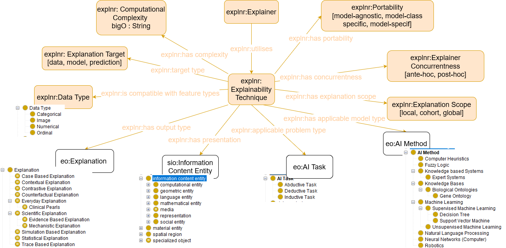

The Explainer Ontology
- Latest version:
- https://www.w3id.org/iSeeOnto/explainer
- Contributors:
- Anjana Wijekoon
- Chamath Palihawadana
- David Corsar
- Ikechukwu Nkisi-Orji
- Juan A. Recio-Garcia
- Marta Caro Martínez
- Imported Ontologies:
- explanationPattern.owl
- sio.owl
- cpannotationschema.owl
- prov-o#
- eo
- Download serialization:


- License:

- Cite as:
- The Explainer Ontology.
Abstract
The Explainer Ontology is an ontology that models the technique used by an Explainer (as defined by the Explanation Ontology), to generate an Explanation. The concepts in this ontology reflect the a subset of the explanability fact sheet dimensions defined by Kacper Sokol and Peter Flach. 2020. Explainability fact sheets: a framework for systematic assessment of explainable approaches, in Proceedings of the 2020 Conference on Fairness, Accountability, and Transparency (FAT* '20) DOI:https://doi.org/10.1145/3351095.3372870. This ontology was created as part of the iSee project (https://isee4xai.com) which received funding from EPSRC under the grant number EP/V061755/1. iSee is part of the CHIST-ERA pathfinder programme for European coordinated research on future and emerging information and communication technologies.Introduction back to ToC
This is a place holder text for the introduction. The introduction should briefly describe the ontology, its motivation, state of the art and goals.Namespace declarations
| explnr | <https://www.w3id.org/iSeeOnto/explainer> |
| schema | <http://schema.org> |
| explanationPattern | <http://linkedu.eu/dedalo/explanationPattern.owl> |
| void | <http://rdfs.org/ns/void> |
| owl | <http://www.w3.org/2002/07/owl> |
| resource | <http://semanticscience.org/resource> |
| xsd | <http://www.w3.org/2001/XMLSchema> |
| protege | <http://protege.stanford.edu/plugins/owl/protege> |
| cpannotationschema | <http://www.ontologydesignpatterns.org/schemas/cpannotationschema.owl> |
| skos | <http://www.w3.org/2004/02/skos/core> |
| eo | <https://purl.org/heals/eo> |
| rdfs | <http://www.w3.org/2000/01/rdf-schema> |
| cito | <http://purl.org/spar/cito> |
| prov-o | <http://www.w3.org/TR/prov-o> |
| rdf | <http://www.w3.org/1999/02/22-rdf-syntax-ns> |
| terms | <http://purl.org/dc/terms> |
| xml | <http://www.w3.org/XML/1998/namespace> |
| explnr | <http://www.isee4xai.com/ontologies/iseeonto/explainer> |
| vann | <http://purl.org/vocab/vann> |
| obo | <http://purl.obolibrary.org/obo> |
| prov | <http://www.w3.org/ns/prov> |
| foaf | <http://xmlns.com/foaf/0.1> |
| explainer | <http://www.w3id.org/iSeeOnto/explainer> |
| dc | <http://purl.org/dc/elements/1.1> |
The Explainer Ontology: Overview back to ToC
This ontology has the following classes and properties.Classes
- Categorical
- Computational Complexity
- Data Type
- Explainability Technique
- Explainer
- Explainer Concurrentness
- Explanation Scope
- Explanation Target
- Image
- Numerical
- Ordinal
- Portability
Object Properties
- applicable problem type
- has applicable model types
- has complexity
- has concurrentness
- has explanation scope
- has output type
- has portability
- has presentation
- is compatible with feature types
- target type
- utilises
Named Individuals
The Explainer Ontology: Description back to ToC
Cross reference for The Explainer Ontology classes, properties and dataproperties back to ToC
This section provides details for each class and property defined by The Explainer Ontology.Classes
- Categorical
- Computational Complexity
- Data Type
- Explainability Technique
- Explainer
- Explainer Concurrentness
- Explanation Scope
- Explanation Target
- Image
- Numerical
- Ordinal
- Portability
Categoricalc back to ToC or Class ToC
IRI: http://www.w3id.org/iSeeOnto/explainer#Categorical
- has super-classes
- Data Type c
Computational Complexityc back to ToC or Class ToC
IRI: http://www.w3id.org/iSeeOnto/explainer#ComputationalComplexity
- is in range of
- has complexity op
Data Typec back to ToC or Class ToC
IRI: http://www.w3id.org/iSeeOnto/explainer#DataType
- has sub-classes
- Categorical c, Image c, Numerical c, Ordinal c
- has members
- categorical ni, image ni, numerical ni, ordinal ni
Explainability Techniquec back to ToC or Class ToC
IRI: http://www.w3id.org/iSeeOnto/explainer#ExplainabilityTechnique
- is in domain of
- applicable problem type op, has applicable model types op, has complexity op, has concurrentness op, has explanation scope op, has output type op, has portability op, has presentation op, target type op
- is in range of
- utilises op
Explainerc back to ToC or Class ToC
IRI: http://www.w3id.org/iSeeOnto/explainer#Explainer
- is in domain of
- utilises op
Explainer Concurrentnessc back to ToC or Class ToC
IRI: http://www.w3id.org/iSeeOnto/explainer#ExplainerConcurrentness
- is equivalent to
- { ante-hoc , post-hoc }
- is in range of
- has concurrentness op
- has members
- ante-hoc ni, post-hoc ni
Explanation Scopec back to ToC or Class ToC
IRI: http://www.w3id.org/iSeeOnto/explainer#ExplanationScope
Explanation Targetc back to ToC or Class ToC
IRI: http://www.w3id.org/iSeeOnto/explainer#ExplanationTarget
- is in range of
- target type op
- has members
- data ni, model ni, prediction ni
Imagec back to ToC or Class ToC
IRI: http://www.w3id.org/iSeeOnto/explainer#Image
- has super-classes
- Data Type c
Numericalc back to ToC or Class ToC
IRI: http://www.w3id.org/iSeeOnto/explainer#Numerical
- has super-classes
- Data Type c
Ordinalc back to ToC or Class ToC
IRI: http://www.w3id.org/iSeeOnto/explainer#Ordinal
- has super-classes
- Data Type c
Portabilityc back to ToC or Class ToC
IRI: http://www.w3id.org/iSeeOnto/explainer#Portability
- is in range of
- has portability op
- has members
- model-agnostic ni, model-class specific ni, model-specific ni
Object Properties
- applicable problem type
- has applicable model types
- has complexity
- has concurrentness
- has explanation scope
- has output type
- has portability
- has presentation
- is compatible with feature types
- target type
- utilises
applicable problem typeop back to ToC or Object Property ToC
IRI: http://www.w3id.org/iSeeOnto/explainer#applicableProblemType
- has domain
- Explainability Technique c
- has range
- a i task
has applicable model typesop back to ToC or Object Property ToC
IRI: http://www.w3id.org/iSeeOnto/explainer#hasApplicableModelType
- has domain
- Explainability Technique c
- has range
- artificial intelligence method
has complexityop back to ToC or Object Property ToC
IRI: http://www.w3id.org/iSeeOnto/explainer#hasComplexity
- has domain
- Explainability Technique c
- has range
- Computational Complexity c
has concurrentnessop back to ToC or Object Property ToC
IRI: http://www.w3id.org/iSeeOnto/explainer#hasConcurrentness
has characteristics: functional
- has domain
- Explainability Technique c
- has range
- Explainer Concurrentness c
has explanation scopeop back to ToC or Object Property ToC
IRI: http://www.w3id.org/iSeeOnto/explainer#hasExplanationScope
- has domain
- Explainability Technique c
- has range
- Explanation Scope c
has output typeop back to ToC or Object Property ToC
IRI: http://www.w3id.org/iSeeOnto/explainer#hasOutputType
- has domain
- Explainability Technique c
- has range
- explanation
has portabilityop back to ToC or Object Property ToC
IRI: http://www.w3id.org/iSeeOnto/explainer#hasPortability
- has domain
- Explainability Technique c
- has range
- Portability c
has presentationop back to ToC or Object Property ToC
IRI: http://www.w3id.org/iSeeOnto/explainer#hasPresentation
- has domain
- Explainability Technique c
- has range
- s i o 000015
is compatible with feature typesop back to ToC or Object Property ToC
IRI: http://www.w3id.org/iSeeOnto/explainer#isCompatibleWithFeatureTypes
target typeop back to ToC or Object Property ToC
IRI: http://www.w3id.org/iSeeOnto/explainer#targetType
- has domain
- Explainability Technique c
- has range
- Explanation Target c
utilisesop back to ToC or Object Property ToC
IRI: http://www.w3id.org/iSeeOnto/explainer#utilises
- has domain
- Explainer c
- has range
- Explainability Technique c
Named Individuals
- ante-hoc
- categorical
- cohort
- data
- global
- image
- local
- model
- model-agnostic
- model-class specific
- model-specific
- numerical
- ordinal
- post-hoc
- prediction
ante-hocni back to ToC or Named Individual ToC
IRI: http://www.w3id.org/iSeeOnto/explainer#ante-hoc
- belongs to
- Explainer Concurrentness c
categoricalni back to ToC or Named Individual ToC
IRI: http://www.w3id.org/iSeeOnto/explainer#categorical
- belongs to
- Data Type c
cohortni back to ToC or Named Individual ToC
IRI: http://www.w3id.org/iSeeOnto/explainer#cohort
- belongs to
- Explanation Scope c
datani back to ToC or Named Individual ToC
IRI: http://www.w3id.org/iSeeOnto/explainer#data
- belongs to
- Explanation Target c
globalni back to ToC or Named Individual ToC
IRI: http://www.w3id.org/iSeeOnto/explainer#global
- belongs to
- Explanation Scope c
imageni back to ToC or Named Individual ToC
IRI: http://www.w3id.org/iSeeOnto/explainer#image
- belongs to
- Data Type c
localni back to ToC or Named Individual ToC
IRI: http://www.w3id.org/iSeeOnto/explainer#local
- belongs to
- Explanation Scope c
modelni back to ToC or Named Individual ToC
IRI: http://www.w3id.org/iSeeOnto/explainer#model
- belongs to
- Explanation Target c
model-agnosticni back to ToC or Named Individual ToC
IRI: http://www.w3id.org/iSeeOnto/explainer#model-agnostic
- belongs to
- Portability c
model-class specificni back to ToC or Named Individual ToC
IRI: http://www.w3id.org/iSeeOnto/explainer#modelClassSpecific
- belongs to
- Portability c
model-specificni back to ToC or Named Individual ToC
IRI: http://www.w3id.org/iSeeOnto/explainer#modelSpecific
- belongs to
- Portability c
numericalni back to ToC or Named Individual ToC
IRI: http://www.w3id.org/iSeeOnto/explainer#numerical
- belongs to
- Data Type c
ordinalni back to ToC or Named Individual ToC
IRI: http://www.w3id.org/iSeeOnto/explainer#ordinal
- belongs to
- Data Type c
post-hocni back to ToC or Named Individual ToC
IRI: http://www.w3id.org/iSeeOnto/explainer#post-hoc
- belongs to
- Explainer Concurrentness c
predictionni back to ToC or Named Individual ToC
IRI: http://www.w3id.org/iSeeOnto/explainer#prediction
- belongs to
- Explanation Target c
Legend back to ToC
op: Object Properties
dp: Data Properties
ni: Named Individuals
References back to ToC
Add your references here. It is recommended to have them as a list.Acknowledgments back to ToC
The authors would like to thank Silvio Peroni for developing LODE, a Live OWL Documentation Environment, which is used for representing the Cross Referencing Section of this document and Daniel Garijo for developing Widoco, the program used to create the template used in this documentation.